Chapter 3 Representing climate change
This chapter uses data from various public sources to represent key trends related to climate, in global and UK context.
For ease of replication, all the data used in the chapter is available as an Excel file data_ch2.xlsx with different datasets saved as different tabs. To replicate the rest of the chapter on your own R installation, download the file and place it inside a folder on your computer. Then set the working directory in R to the folder where you placed the file. On my machine this is the following:
In addition, run the following code to install all the R libraries that will be used for the analysis
install.packages("readxl")
install.packages("dplyr")
install.packages("ggplot2")
install.packages("forcats")and load them
3.1 Global trends
3.1.1 Monthly global surface temperature
This section uses monthly data on global surface (land and ocean) temperature from Rohde and Hausfather (2020) available here. For ease of replication, the data has been saved in the sheet gst of the data_ch2.xlsx Excel file.
The data contains 2079 monthly observations (from January 1850 to March 2023) of average monthly global surface temperatures, reported in terms of temperature anomalies (i.e., differences) relative to average temperatures in the corresponding month from January 1951 to December 1980.
For the purpose of producing time-series plots, combine the Year and Month variables into a single variable Date
Then plotting monthly temperature anomalies against time yields the following
ggplot(gst, aes(x=Date, y=TemperatureAnomaly)) +
geom_line(col="blue") +
geom_hline(yintercept=0, lty="dashed", col="black", linewidth=1) +
geom_segment(y=0,yend=0, x=as.Date("1951-01-01"), xend=as.Date("1980-12-01"), col="red", linewidth=1) +
labs(title="Time series line plot", subtitle = "Average global monthly temperature anomalies") +
xlab("Time") + ylab("Degrees relative to 1951-1980 average")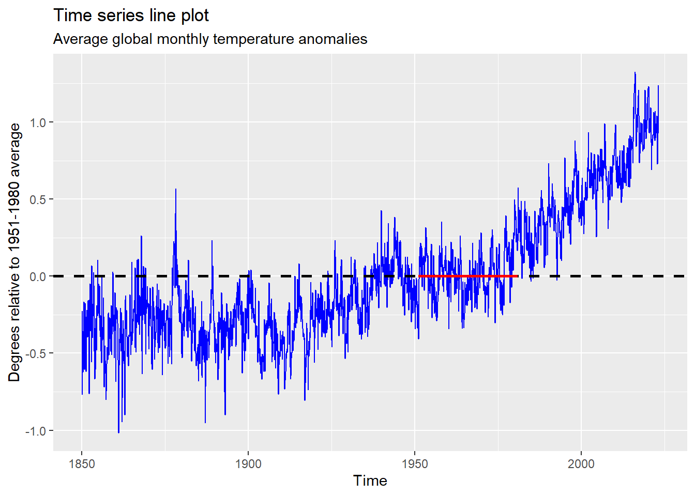
From the 1850s until around the 1910s average global temperatures were approximately stable, at levels around 0.3 degrees below the 1951-1980 average. There was a pronounced upward trend from the 1910s until the 1940s. Temperatures remained relatively stable until the 1970s. Afterwards, they have been rising steadily and as of 2023 are around 1 degree above the 1951-1980 average. Throughout the whole period average global temperatures have risen by more than 1.3 degrees Celsius.
While the overall trend is clearly visible, temperature anomalies exhibit large fluctuations at monthly frequency. One way to represent the trend more clearly is to convert the monthly data to 10-year averages.
# Create new data frame based on the original one, and create a variable for the decade
gst.decade <- gst %>% mutate(Decade = floor(Year/10)*10)
# Create a new variable which equals the mean monthly anomaly for all months in each decade
gst.decade <- gst.decade %>% group_by(Decade) %>% mutate(aveTempAnomaly = mean(TemperatureAnomaly))
# Keep only one observation per decade
gst.decade <- gst.decade %>% group_by(Decade) %>% filter(row_number() == 1)
# Remove observations for the 2020-2029 decade, as sample is smaller
gst.decade <- subset(gst.decade, Decade<2020)
# Report a table of average temperatures by decade
tab <- cbind(gst.decade$Decade, gst.decade$aveTempAnomaly)
tab <- gst.decade %>% select(c("Decade", "aveTempAnomaly"))
tabThe table of 10-year averages confirms the above discussion.
The information from the table can be equivalently presented as a time-series line plot
ggplot(gst.decade, aes(x=Decade, y=aveTempAnomaly)) +
geom_point(col="blue") +
geom_line(col="blue")+
geom_hline(yintercept=0, lty="dashed", col="black", linewidth=1) +
geom_segment(y=0,yend=0, x=1950, xend=1980, col="red", linewidth=1) +
labs(title="Time series line plot", subtitle = "Decade averages of average global monthly temperature anomalies") +
xlab("Time") + ylab("Degrees relative to 1951-1980 average")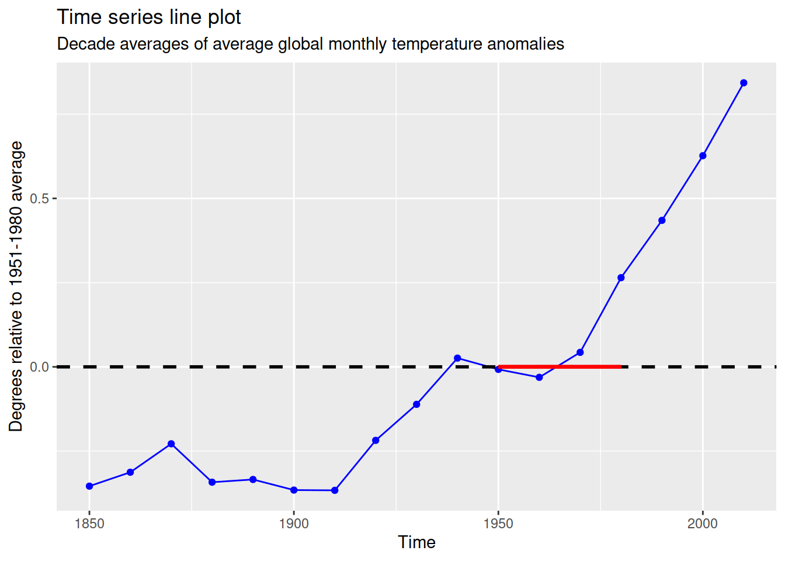
or a bar chart
ggplot(gst.decade, aes(x=as.factor(Decade), y=aveTempAnomaly)) +
geom_bar(stat="identity", fill="blue")+
geom_hline(yintercept=0, lty="dashed", col="black", linewidth=1) +
geom_segment(y=0,yend=0, x=10.5, xend=13.5, col="red", linewidth=1) +
labs(title="Bar chart", subtitle = "Decade averages of average global monthly temperature anomalies") +
xlab("Time") + ylab("Degrees relative to 1951-1980 average")
In summary, since 1850 there has been a marked increase in global surface temperatures, occurring over two distinct stages - 1910s to 1940s and then 1970s to present.
3.1.2 Changes in ice mass
This section uses data from NASA/JPL (2019), on the Antarctic ice mass measured by satellites, available here. For ease of replication, the data has been saved in the sheet ice of the data_ch2.xlsx Excel file.
The data is an irregularly sampled time series: time is measured as year, reported in decimal form depending on the point in the year when satellites made a measurement. The mass of Antarctic ice is reported as anomaly (i.e., change) in gigatonnes, relative to February 2002.
Plotting the Antarctic mass anomaly against time yields
ggplot(antarctic, aes(x=Time, y=Mass)) + geom_line(col="blue") +
labs(title="Time series line plot", subtitle = "Change in Antarctica ice mass") +
xlab("Time") + ylab("Gigatonnes, Change relative to 2002")
We observe that the mass of the Antarctic ice cap has decreased by around 3000 gigatonnes from 2002 to 2023.
3.1.3 Sea level
This section uses data from MEaSUREs (2023), on the global mean sea level measured by satellites, available here. For ease of replication, the data has been saved in the sheet sea of the data_ch2.xlsx Excel file.
Similarly to the data on ice mass, this data is an irregularly sampled time series: time is measured by year reported in decimal form depending on the point in the year when satellites made a measurement. The average global sea level (GMSL) is reported in the form of anomaly (i.e., change) in millimeters, relative to January 1993.
Plotting the mean seal level anomaly against time yields
ggplot(sea, aes(x=Time, y=GMSL)) + geom_line(col="blue") +
labs(title="Time series line plot", subtitle = "Global mean sea level change") +
xlab("Time") + ylab("mm, Change relative to 1993")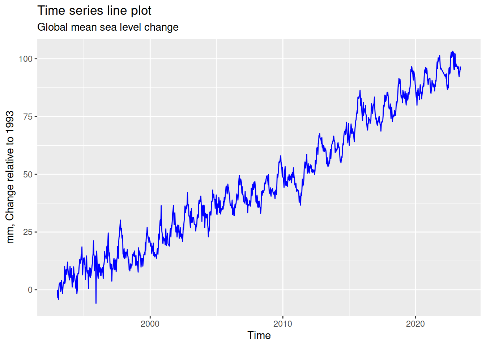
We observe that from 1993 to 2023, global mean sea level has raised by approximately 100 mm (or 10 cm).
3.1.4 CO2 concentration
It is well understood that one of the key drivers of changes in the climate, is changes in the concentration of greenhouse gases in the atmosphere. Greenhouse gases (including CO2, methane, NO and others) absorb the radiation of heat reflected by the Earth surface and cause heating of the atmosphere.
This section uses monthly time-series data on atmospheric carbon dioxide (CO2) levels measured by NOAA at Mauna Loa Observatory, Hawaii, since 1958. The data comes from Tans and Keeling (2023), and is available here. For ease of replication, the data has been saved in the sheet co2 of the data_ch2.xlsx Excel file.
Loading, preparing, and printing the first few rows of data
we observe that data is monthly, from March 1958 to July 2023. Atmospheric CO2 levels (the variable co2) are measured in parts per million.
Plotting CO2 levels against time yields
ggplot(co2df, aes(x=Time, y=co2)) + geom_line(col="blue")+
labs(title="Time series line plot", subtitle = "Atmospheric CO2 levels measured at Mauna Loa Observatory") +
xlab("Time") + ylab("CO2, parts per million")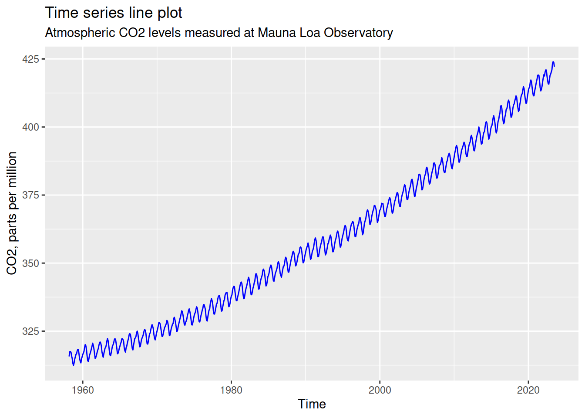
Atmospheric concentration of CO2 has raised steadily from 315 ppm in March 1958 to 422 ppm in July 2023. We observe that CO2 levels fluctuate seasonally, but fluctuations are small relative to the long run trend.
3.1.5 CO2 emissions
There is evidence from ice-core data (e.g., see here) that CO2 concentrations in the atmosphere have varied considerably over hundreds of thousands of years, driving cycles of warming and cooling of the planet. However, current CO2 concentrations are unprecedented, and a key reason for this is human activity, especially the release of greenhouse gases from fossil fuels which has increased considerably since the Industrial Revolution.
This section uses annual time-series data on the World’s total CO2 emissions from fossil fuels. The data comes from Global Carbon Budget (2022a), and is available here. For ease of replication, the data has been saved in the sheet co2emissions of the data_ch2.xlsx Excel file.
Load the data and print first few rows
The data contains annual observations from 1750 until 2021 of the global CO2 emissions from fossil fuels, measured by the variable co2 in tonnes.
Given the scale of measurement, it is convenient to change the unit of measurement to billions of tones, by dividing the series by 1000000000:
Plotting CO2 emissions against time yields
ggplot(co2world, aes(x=Year, y=co2)) + geom_line(col="blue")+
labs(title="Time series line plot", subtitle = "Global CO2 emissions from fossil fuels") +
xlab("Year") + ylab("Billions of tonnes")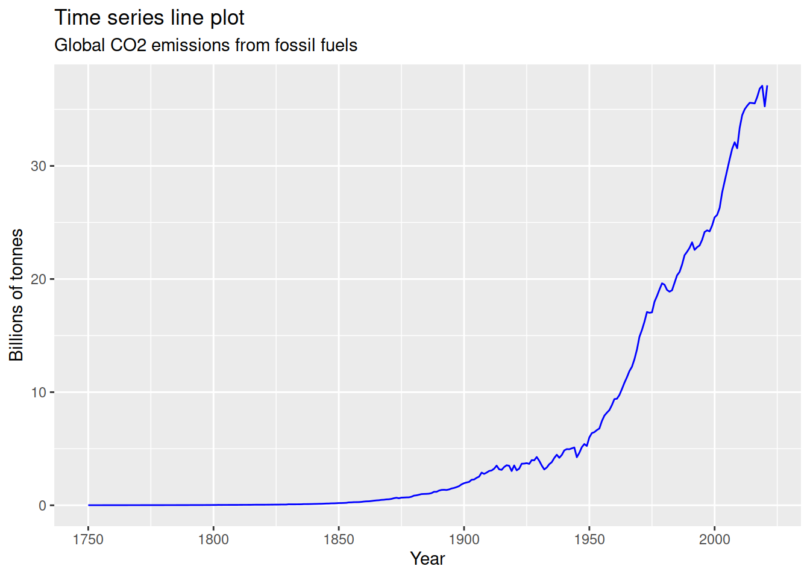
It can be observed that CO2 emissions from human activity have increased sharply since 1750, and at an increasing rate for most of the 20th century.
3.1.6 CO2 emissions and GNI per capita
As we have already seen in the Topic of GNI per capita, at country level CO2 emissions per capita associate closely with the level of economic development measured by GNI per capita (PPP). While the associations was already illustrated in the previous topic, we also represent it here for completeness. Again, we use cross sectional data on GNI p.c. (PPP) and CO2 emissions for 212 countries. The data comes from the World Bank’s World Development Indicators database, and is available here. For ease of replication, the data has been saved in the sheet gni_co2_pc_2019 of the data_ch2.xlsx Excel file.
Load the data and print first few rows
ggplot(gnico22019, aes(x=log(GNIpc), y=log(CO2pc))) + geom_point(col="blue")+
labs(title="Scatterplot", subtitle = "GNI p.c. (PPP) and CO2 emissions p.c., 2019") +
xlab("log(International Dollars per capita)") + ylab("log(Metric tonnes per capita)")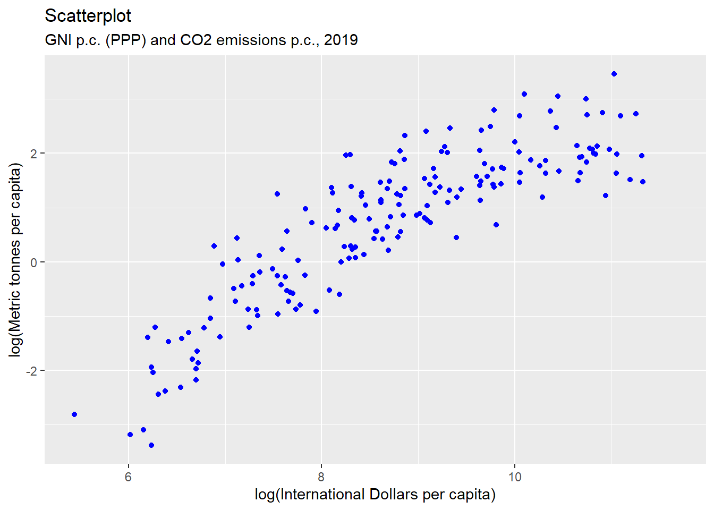
Again, we can see that countries with high per-capita income, also tend to have high per-capita CO2 emissions.
3.2 UK trends
3.2.1 UK temperatures
The data on temperature anomalies discussed above represented average global temperature anomalies, but climate varies geographically, and the overall change in climate affects different regions differently. We now turn attention to specific trend related to the climate of the UK.
This section uses annual time-series data on annual average temperature in the UK. The data comes from Met Office (2023a), and is available here. For ease of replication, the data has been saved in the sheet uktemp of the data_ch2.xlsx Excel file.
Loading the data and printing the first few rows
the data contains 139 annual observations (from 1884 to 2022) of the annual average temperature in the UK, measured in degrees Celsius.
Plotting temperatures against time
ggplot(uktemp, aes(x=Year, y=AnnualMeanTemperature)) +
geom_line(col="blue") +
labs(title="Time series line plot", subtitle = "Average annual temperature in UK") +
xlab("Time") + ylab("Degrees")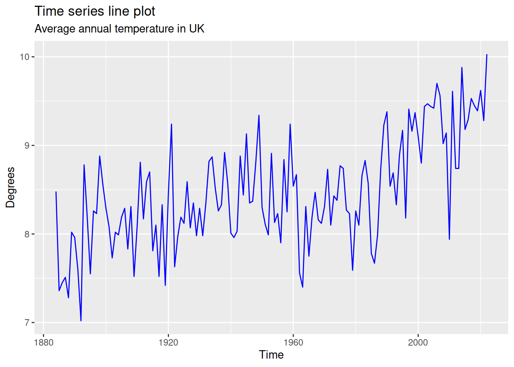
we observe that while temperature fluctuates considerably at annual frequency, overall there is a positive trend (possibly non-monotonic). Average annual temperatures in the end of the 19th century tended to be around 8 degrees, but have been typically above 9.5 degrees in the last years.
For purpose of comparison UK trends to the global trend documented above, we can measure temperatures in terms of anomalies relative to the 1951-1980 average. Construct a new variable, AnnualAnomaly equal to the difference between the temperature in a given year and the average of annual temperatures from 1951 to 1980:
mean5180 <- mean(subset(uktemp, Year>=1951 & Year<=1980)$AnnualMeanTemperature)
uktemp$AnnualAnomaly <- uktemp$AnnualMeanTemperature - mean5180Plotting the annual anomaly against time
ggplot(uktemp, aes(x=Year, y=AnnualAnomaly)) +
geom_line(col="blue") +
geom_hline(yintercept=0, lty="dashed", col="black", linewidth=1) +
geom_segment(y=0,yend=0, x=1951, xend=1980, col="red", linewidth=1) +
labs(title="Time series line plot", subtitle = "Average annual temperature anomalies, UK") +
xlab("Time") + ylab("Degrees relative to 1951-1980 average")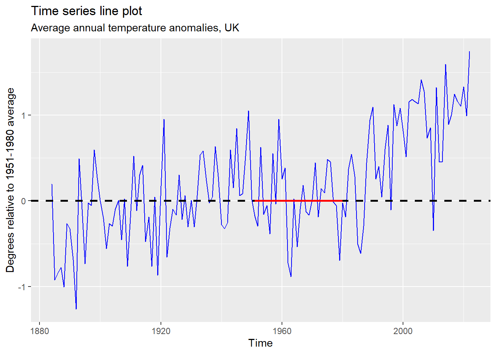
we observe that the pattern of temperatures in the UK looks very similar to the global pattern. Of course, it should be noted that measurement is not directly comparable - for one, global data was available at monthly, while UK at annual frequency. Furthermore, global temperatures were averages across land and ocean surface, while UK temperatures are land surface only.
Again, we can provide a clearer understanding of the long term trend if we average out annual fluctuations, for example, by converting annual data, to data on 10-year averages (as before):
# Create a variable measuring decade
uktemp.decade <- uktemp %>% mutate(Decade = floor(Year/10)*10)
# Create variable aveTempAnomaly equal to the average of annual temperatures for the corresponding decade.
uktemp.decade <- uktemp.decade %>% group_by(Decade) %>% mutate(aveTempAnomaly = mean(AnnualAnomaly))
# Keep single observation for decade
uktemp.decade <- uktemp.decade %>% group_by(Decade) %>% filter(row_number() == 1)
# Remove observations for "incomplete" decades
uktemp.decade <- subset(uktemp.decade, Decade<2020&Decade>1880)
# Plot 10-year average temperatures against corresponding decades
ggplot(uktemp.decade, aes(x=Decade, y=aveTempAnomaly)) +
geom_point(col="blue") +
geom_line(col="blue")+
geom_hline(yintercept=0, lty="dashed", col="black", linewidth=1) +
geom_segment(y=0,yend=0, x=1950, xend=1980, col="red", linewidth=1) +
labs(title="Time series line plot", subtitle = "Decade averages of average annual UK temperature anomalies") +
xlab("Time") + ylab("Degrees relative to 1951-1980 average")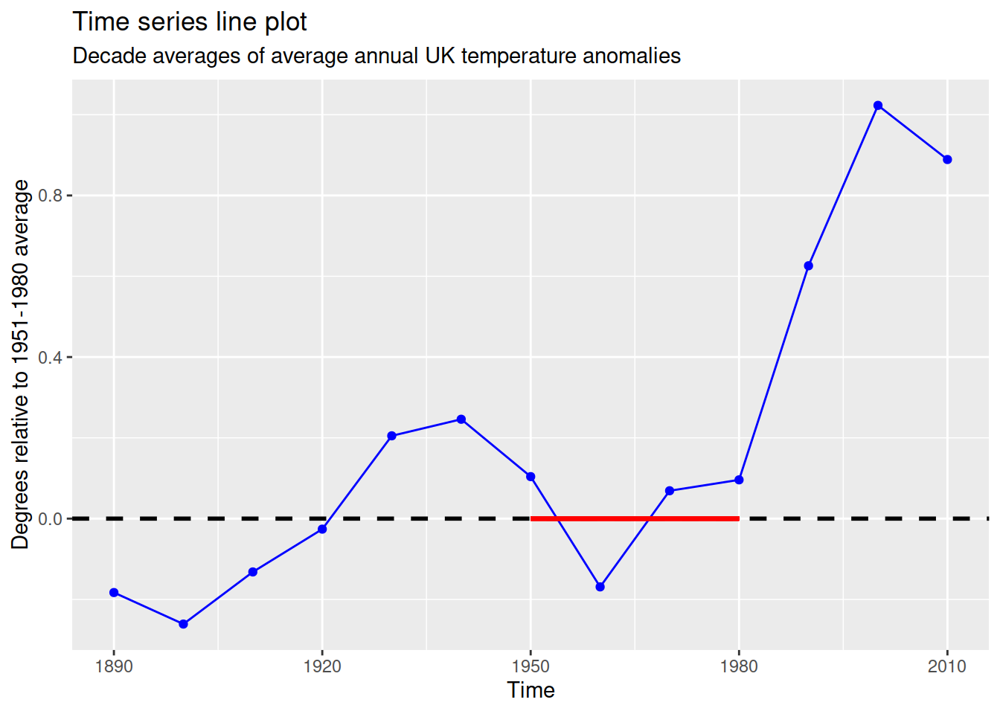
The pattern for UK is very similar to the global pattern documented before, with the notable difference that UK temperatures followed a brief downward trend from 1940s to the 1960s.
3.2.2 UK Rainfall
This section uses annual time-series data on annual average rainall in the UK. The data comes from Met Office (2023b), and is available here. For ease of replication, the data has been saved in the sheet ukrain of the data_ch2.xlsx Excel file.
Loading the data and printing the first few rows
The data consists of 186 annual observations (from 1836 to 2021) of the average annual rainfall in UK, measured in millimeters.
Plotting average annual rainfall against time yields
ggplot(ukrain, aes(x=Year, y=Rain)) +
geom_line(col="blue") +
labs(title="Time series line plot", subtitle = "Average annual rainfall in UK") +
xlab("Time") + ylab("Millimeters")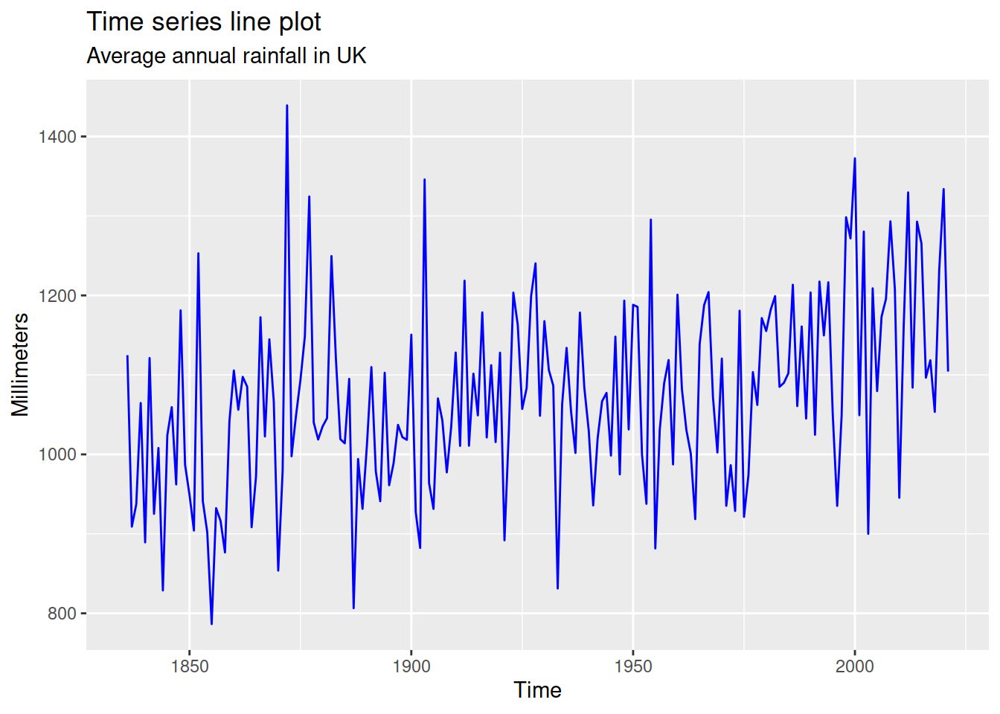
Relative to average temperature, we can observe that average rainfall tends to be quite more volatile at annual frequency (it is relatively common for very wet and very dry years to occur, and there are large differences between wet and dry years). Nonetheless, we can also observe that there is an increasing long-term trend - typical rainfall in the begining of the 19th century was around 1000 mm, while in recent decades typical years see 1200 mm or rain.
Similarly to prior sections we can represent this more clearly by reporting rainfall in terms of annual anomalies (differences) relative to the 1951-1980 average
# Calucalte mean annual rainfall for 1951-1980
mean5180 <- mean(subset(ukrain, Year>=1951 & Year<=1980)$Rain)
# Calculate annual anomaly as difference between actual annual rainfall and the 1951-1980 average
ukrain$AnnualAnomaly <- ukrain$Rain - mean5180
# Plot annual anomalies against year
ggplot(ukrain, aes(x=Year, y=AnnualAnomaly)) +
geom_line(col="blue") +
geom_hline(yintercept=0, lty="dashed", col="black", linewidth=1) +
geom_segment(y=0,yend=0, x=1951, xend=1980, col="red", linewidth=1) +
labs(title="Time series line plot", subtitle = "Annual UK rain anomalies") +
xlab("Time") + ylab("Millimeters relative to 1951-1980 average")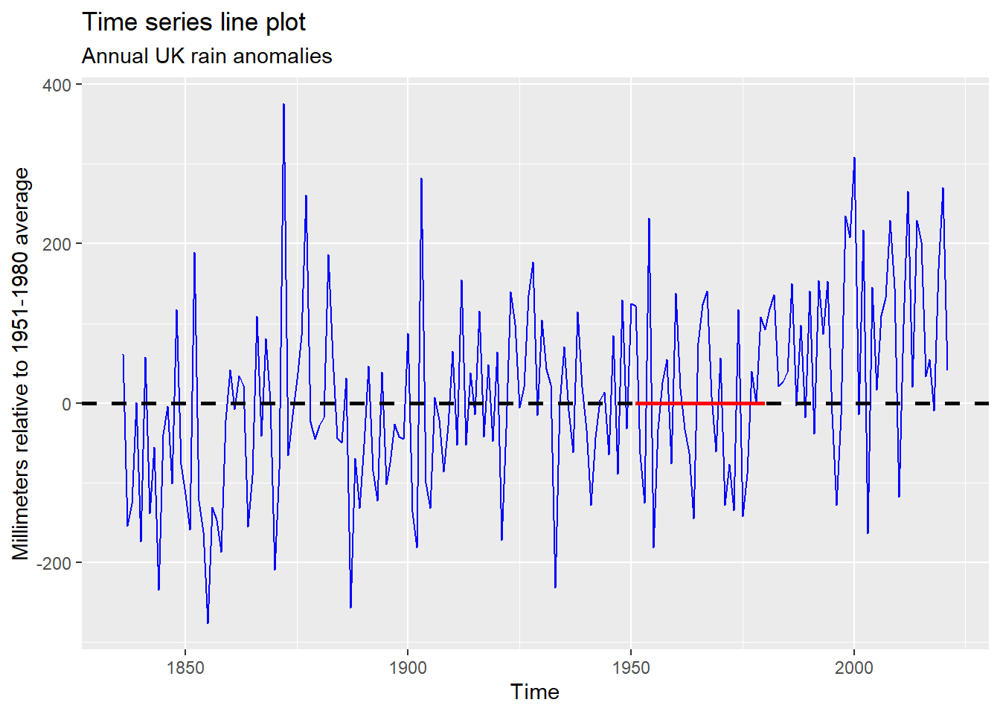
where we can clearly see that typical years recently are wetter than typical years in 1951-1980, and 1951-1980 are on average wetter than in the begining of the observation window.
As before, to focus on trends rather than fluctuations, represent the data in terms of 10-year averages:
# Create a variable measuring the decade of observation
ukrain.decade <- ukrain %>% mutate(Decade = floor(Year/10)*10)
# Create a variable measuring the average anomaly per decade
ukrain.decade <- ukrain.decade %>% group_by(Decade) %>% mutate(aveAnomaly = mean(AnnualAnomaly))
# Keep single observation per decade
ukrain.decade <- ukrain.decade %>% group_by(Decade) %>% filter(row_number() == 1)
# Remove incomplete decades
ukrain.decade <- subset(ukrain.decade, Decade>1830&Decade<2020)
# Plot
ggplot(ukrain.decade, aes(x=Decade, y=aveAnomaly)) +
geom_point(col="blue") +
geom_line(col="blue")+
geom_hline(yintercept=0, lty="dashed", col="black", linewidth=1) +
geom_segment(y=0,yend=0, x=1950, xend=1980, col="red", linewidth=1) +
labs(title="Time series line plot", subtitle = "Decade averages of annual rain anomalies, UK") +
xlab("Time") + ylab("Millimeters relative to 1951-1980 average")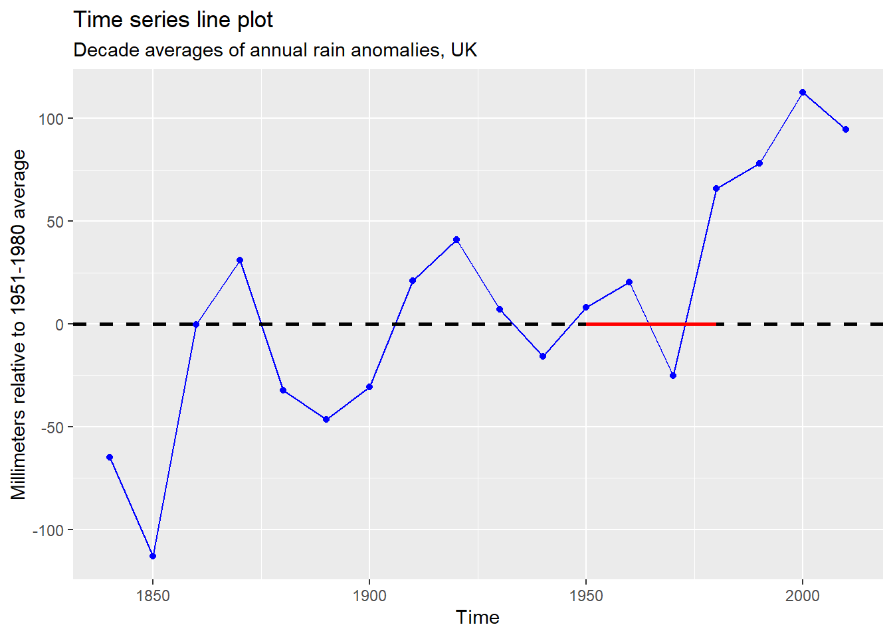
We can see that recent decades typically experienced about 100 mm (10 cm) annual rain, than in 1951-1980.
3.2.3 UK CO2 emissions
This section uses annual time-series data on UK’s CO2 emissions. The data comes from Global Carbon Budget (2022b), and is available here. For ease of replication, the data has been saved in the sheet ukco2 of the data_ch2.xlsx Excel file.
Load the data and print first few rows
The dataset contains annual data (from 1750 to 2021) on estimates of UK’s
- production-based CO2 emissions, measured by the variable co2 in tonnes; and
- consumption-based CO2 emissions, measured by the variable co2cons in tonnes.
Production-based emissions record the amount of CO2 emitted through production within a country’s own borders. Consumption-based emissions record the amount of CO2 emitted to produce the goods and services consumed within an economy (i.e., accounting for trade). While production-based emissions are available since 1750, consumption-based emissions are only available since 1990.
Given the scale of the variables, it is appropriate to report emissions in terms of millions of tonnes, rather than tonnes. To do this, divide emissions in tonnes by 1000000:
Plotting UK’s production-based CO2 emissions against time yields
ggplot(ukco2, aes(x=Year, y=co2)) +
geom_line(col="blue") +
labs(title="Time series line plot", subtitle = "Annual production-based CO2 emissions, UK") +
xlab("Time") + ylab("Millions of tonnes")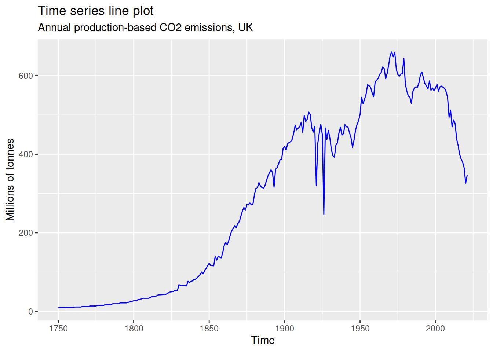
Since the outset of the Industrial Revolution, UK’s CO2 emissions increased at an approximately exponential rate, peaking in the 1970s at levels around 650 millions of tonnes per year (and seeing a relative decline at the time of WW1 and the Great Depression). Following the sectoral restructuring in the economy away from manufacturing CO2 emissions embodied in production have declined to about 346 millions of tonnes as of 2022.
However, plotting consumption and production based emissions on the same graph for the same time window
ggplot(ukco2, aes(x=Year)) +
geom_line(aes(y=co2,col="Production")) +
geom_line(aes(y=co2cons,col="Consumption")) +
labs(title="Time series line plot", subtitle = "Annual CO2 emissions, UK", col = "Measure") +
xlab("Time") + ylab("Millions of tonnes") +
scale_color_manual(values=c("red", "blue"))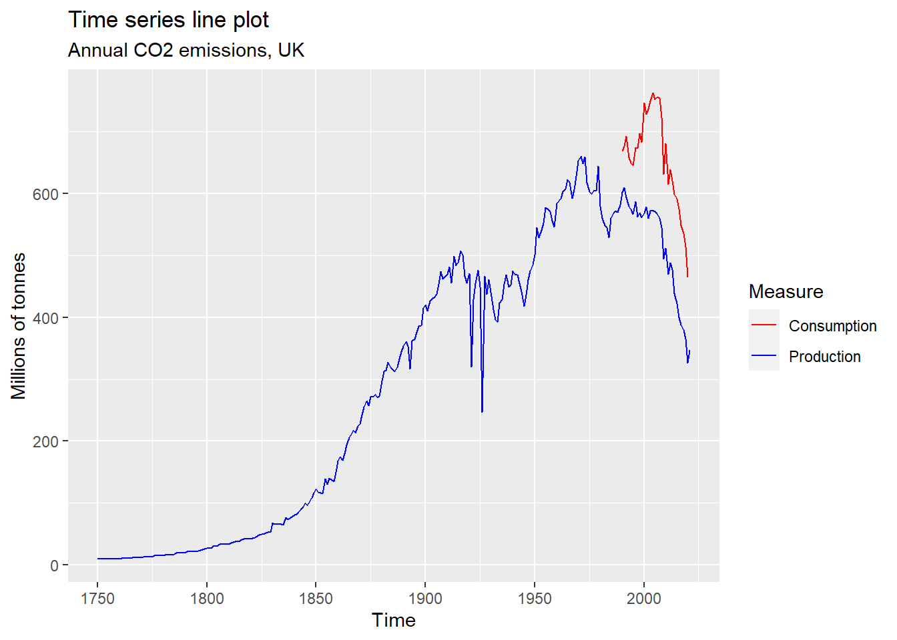
or only for the part of the window where consumption-based measures are available
ggplot(ukco2, aes(x=Year)) +
geom_line(aes(y=co2,col="Production")) +
geom_line(aes(y=co2cons,col="Consumption")) +
labs(title="Time series line plot", subtitle = "Annual CO2 emissions, UK", col = "Measure") +
xlab("Time") + ylab("Millions of tonnes") +
xlim(c(1988,2022)) +
scale_color_manual(values=c("red", "blue"))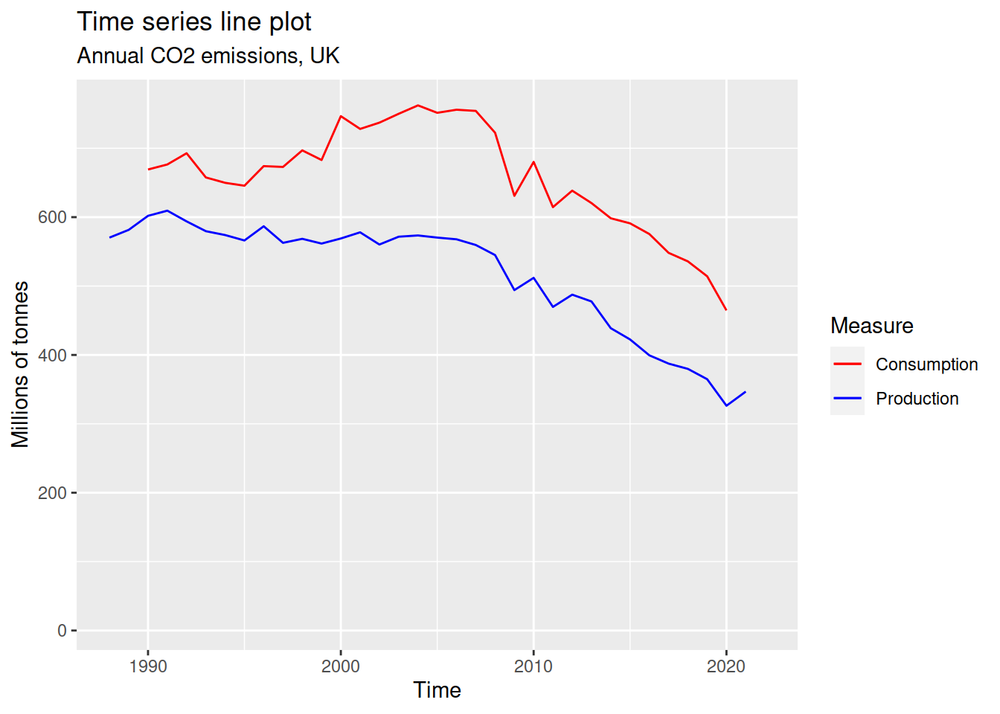
we observe that while UK’s production embodies much less CO2 emissions than its consumption (i.e., UK is a net importer of “CO2” emissions). Still, even consumption-based CO2 emissions have seen a decline since the early 2000s.